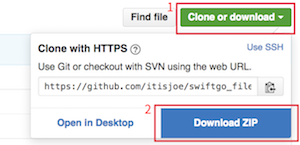

Swift 起步走
v1.4.0
本書內容包含：
- Swift 語法的詳細介紹
- UIKit 常用元件的詳細介紹
- 35 個範例 App
- 3 個完整實戰 App
使用 Swift 5.1 ，對應 iOS 13 及 Xcode 11.3。
需要工具
目前 Swift 主要是用來開發 iPhone 應用程式(另外還可以開發 iPad 、 Mac 及 Apple Watch 的應用程式)，所以你必須先有一台 Mac ( MacBook 、 Mac mini 或是 Mac Pro)，且必須安裝足夠新的作業系統版本，才能夠安裝開發軟體 Xcode 。(像是 Xcode 11 只能安裝在 macOS 10.14.4 以上的作業系統。)
如果你只是想嘗鮮 Swift 的語法而還沒有 Mac ，你也可以選擇線上即時編譯的工具來寫寫 Swift ，Online Swift Playground 這個網站可以讓你直接在瀏覽器上測試 Swift 語法。
課程內容
以下是本書會介紹的內容，如果時間允許，建議依照下列章節依序閱讀，以達較佳學習效果。另外如果是第一次接觸 Xcode ，可以先看看 Xcode 介紹章節，來熟悉軟體操作。
- Swift 基礎
- Swift 進階
- UIKit
- UIKit 初探
- 文字標籤 UILabel
- 文字輸入 UITextField
- 輸入多行文字 UITextView
- 按鈕 UIButton
- 提示框 UIAlertController
- 圖片 UIImageView
- 選取日期時間 UIDatePicker
- 選擇器 UIPickerView
- 開關 UISwitch
- 分段控制 UISegmentedControl
- 進度條 UIProgressView
- 滑桿 UISlider
- 步進器 UIStepper
- 網頁 UIWebView
- 表格 UITableView
- 網格 UICollectionView
- 搜尋 UISearchController
- 滑動視圖 UIScrollView
- 多頁面
- 導覽控制器 UINavigationController
- 標籤列控制器 UITabBarController
- 手勢 UIGestureRecognizer
- 簡單動畫 Animations
- 儲存資訊 UserDefaults
- 資料庫
- iPhone Apps
範例
本書範例程式碼放在 https://github.com/itisjoe/swiftgo_files ，請在閱讀本書內容時，交互搭配範例程式碼。強烈建議先將範例程式碼下載回本地隨時閱讀，以簡省時間。
下載方式請點擊該頁面右上方Clone or download，接著點擊Download ZIP，如下圖：
